| 日付 | 2018年5月27日（日） |
|---|---|
| 山域 | 奥武蔵 |
| メンバー | グループ（男2女4子供6） |
| 山行形態 | 子連れ日帰り |
| アクセス | 電車 |
| ルート (Map) | 高麗駅 (8:56) - (9:38) 鳥居 - (10:04) 日和田山 (11:25) - (12:06) 鳥居 (12:47) - (13:46) 高麗駅 |
昨年末の日の出山に続いて、今年も山友達と山に行く企画を立てる。
標高が低いお手軽登山なので、子連れでも気軽に登ることができる山だ。
高麗駅に到着。標高115m。
8年前に訪れたときは賑わっていたが、この季節は閑散としている。
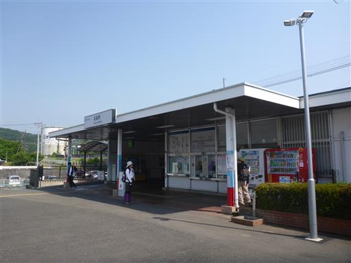
駅前で山友達と集合。今回は4家族の参加だ。
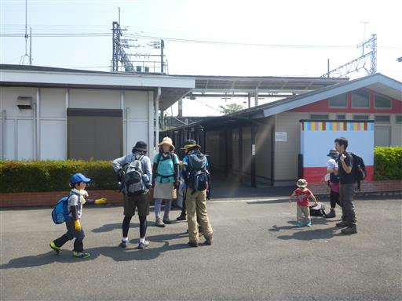
駅前には謎の柱が立っている。調べてみると将軍標というものらしい。
韓国の村落に見られる魔除けのためのもののようだ。
高麗（こま）駅という名からも分かるように、この地は韓国と関係があるようだ。
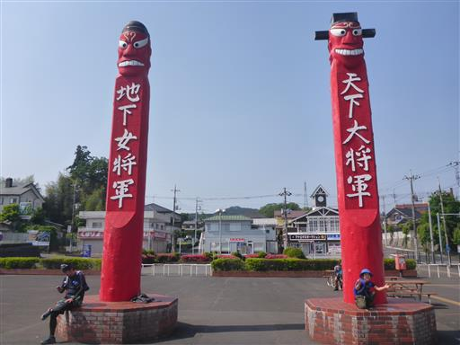
今回は駅から登山。登山口まで車道を歩く。
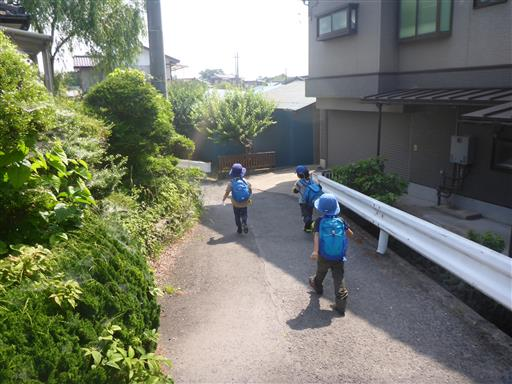
日和田山の登山口が見えてきた。
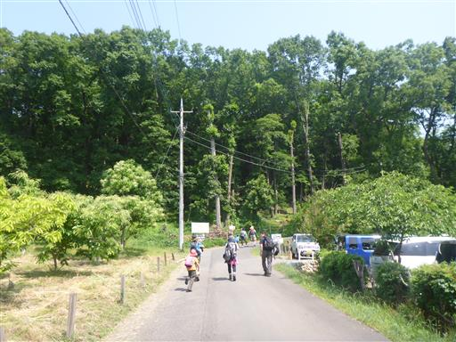
雑な地図。
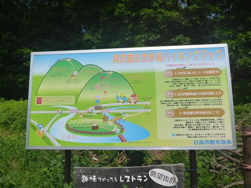
今回参加の子供たちは2～7歳と幅広い。
列が長く伸びるのはやむを得ない。
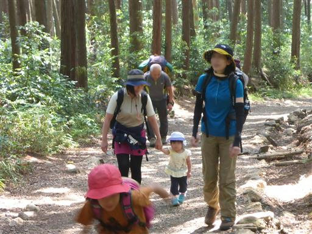
大きな鳥居に到着。ここから男坂と女坂に分かれるが、無難に女坂を選択。
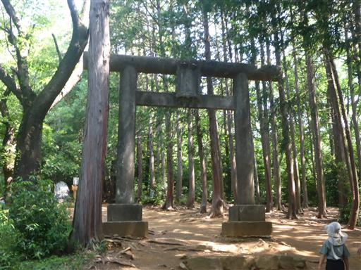
中腹の岩場に到着。
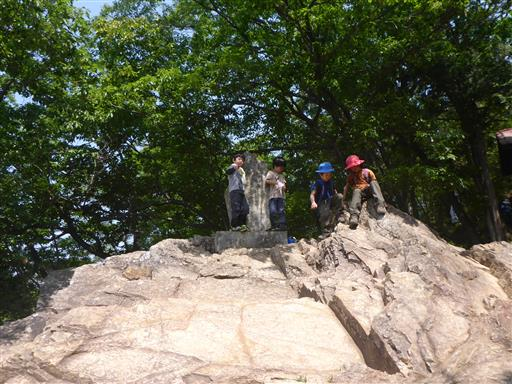
ここからは展望が広がる。と言っても本日は霞んでいて大したものは見えない。
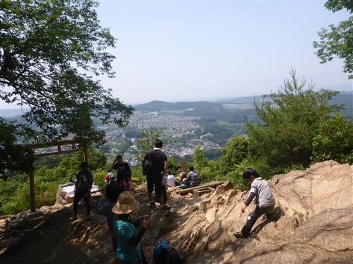
あっという間に山頂に到着。標高305m。
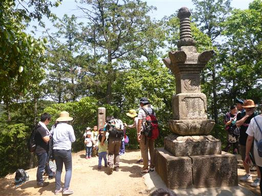
山頂で記念撮影。子供が多いと並ばせるのも大変だ。
当初の予定では物見山まで行く予定だったが、思ったよりも時間がかかったため、
ここで昼食をとることにする。
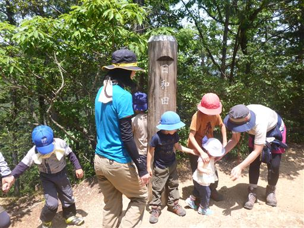
下山は物見山経由でなく元来た道を下る。
岩場では子供たちが岩を滑り台にして遊んでいる。
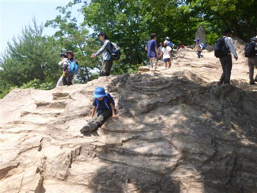
眼下に巾着田が見える。巾着の形をした平地だ。
春には菜の花、秋には彼岸花が咲くことで有名だが、この季節は何も無さそうだ。
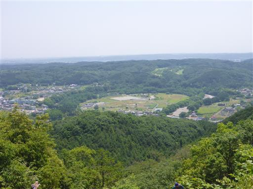
下山はパーティを分けて、余裕のある子供たちは男坂を下る。
合流点に早く着いたので、遊び始める。
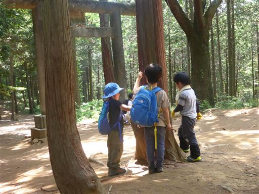
全員が合流し、しばらく遊んだら下山を開始。
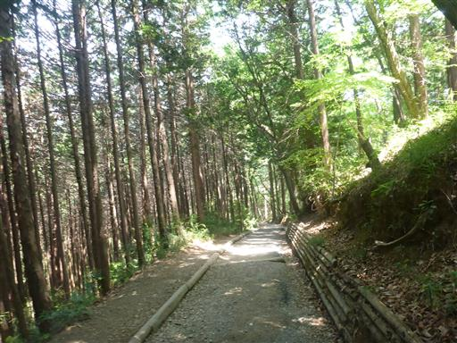
トイレ休憩。男の子が多いので、落ちていた棒でチャンバラが始まる。
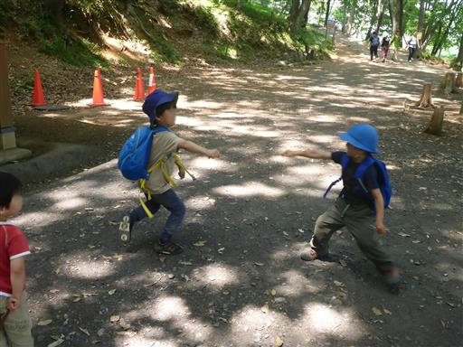
高麗駅に到着。
短い山行だったが、久々に会えた友人もいて、楽しい一時を過ごせた。
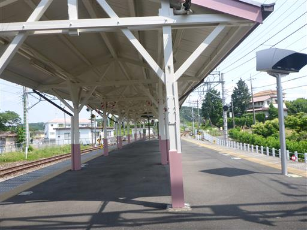